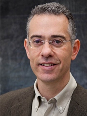
Professor and Vice Chair · Biological and Agricultural Engineering, UC Davis
Stavros G. Vougioukas received his Diploma in Electrical Engineering from Aristotle University in Thessaloniki, Greece (1989). He conducted graduate studies in the U.S. under a Fulbright grant and several research assistantships. He received his M.Sc. in Electrical and Computer Engineering (SUNY at Buffalo, 1999) and his Ph.D. in Robotics and Automation (Electrical, Computers and Systems Engineering, Rensselaer Polytechnic Institute, 1995). Afterward, he worked for one year as a post-doctoral researcher at the Department of Industrial Engineering in Parma, Italy. Until 2011 he was faculty at the School of Agriculture of the Aristotle University in Thessaloniki. In 2012 he joined the Biological and Agricultural Engineering Department at the University of California, Davis.
He has published more than 140 journal and conference papers, most of them in agricultural robotics and automation. He leads research on agricultural robotics, with an emphasis on labor-saving technologies, funded by grower commodity boards, federal agencies, and industry.
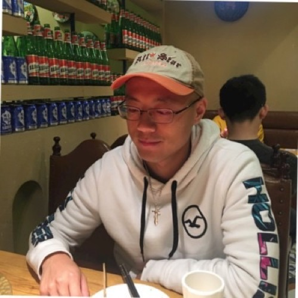
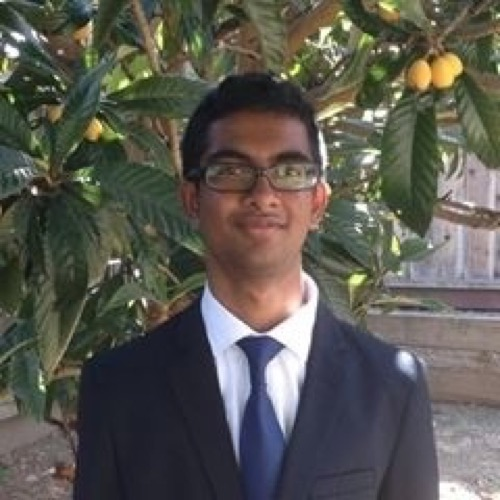
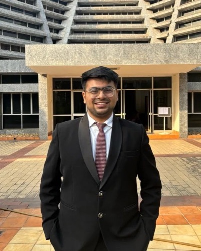
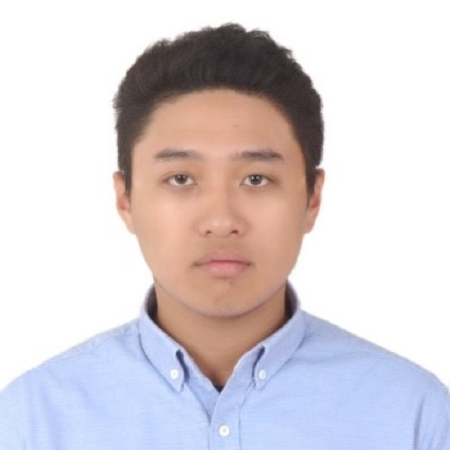
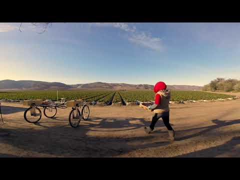
FRAIL-bots Fragile-crop container co-robots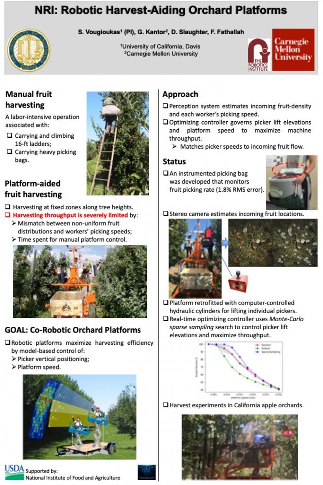
Orchard platform Co-robotic picker lifts Linear arm array Vision-guided tree-fruit picking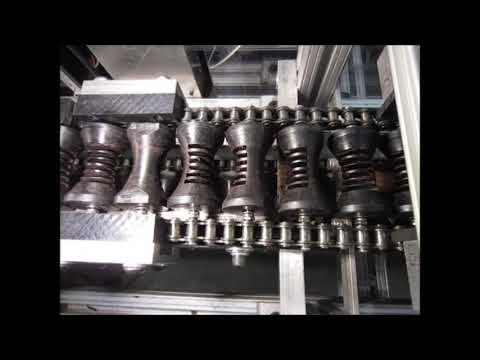
Strawberry capper Orienting and capping line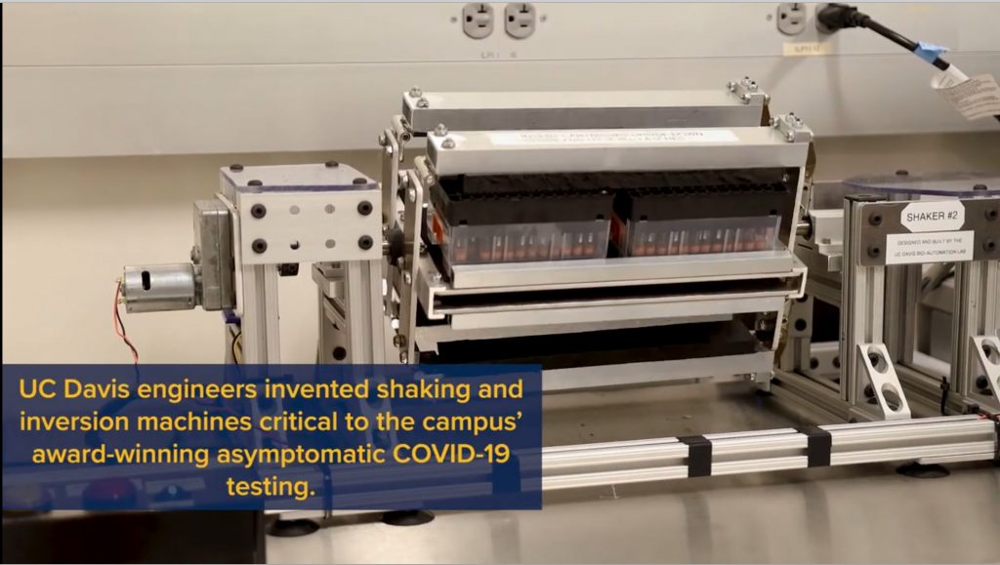
Rotator-mixer COVID-19 saliva sample prep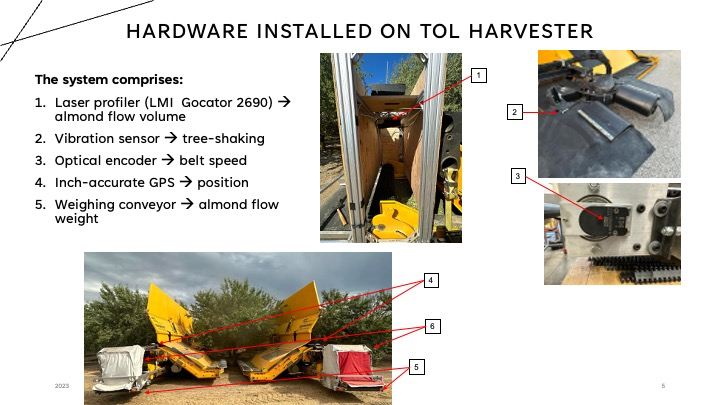
Yield monitor Almond and pistachio sensing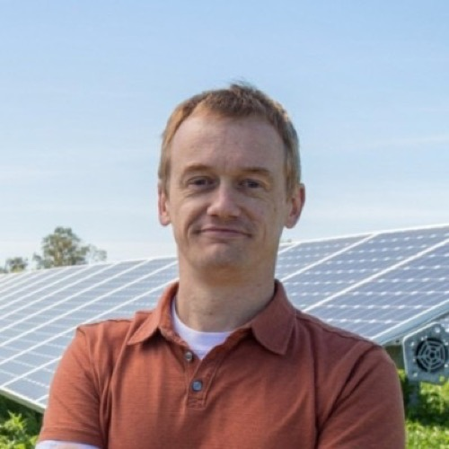
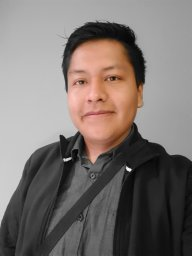
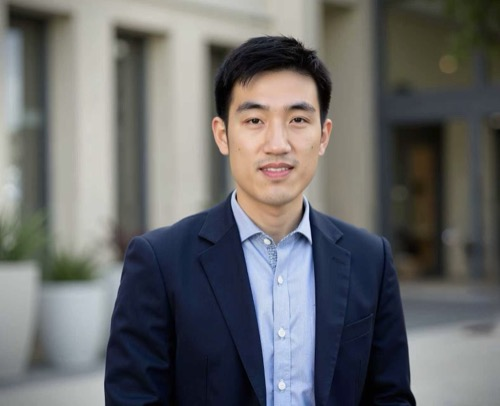
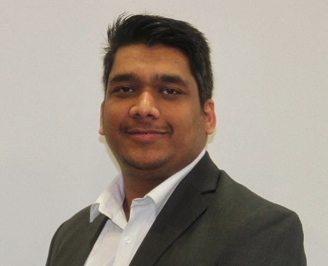
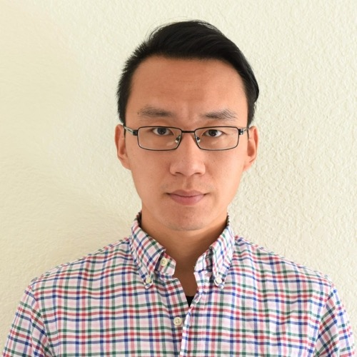
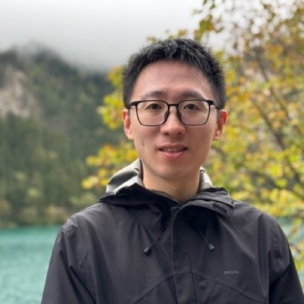
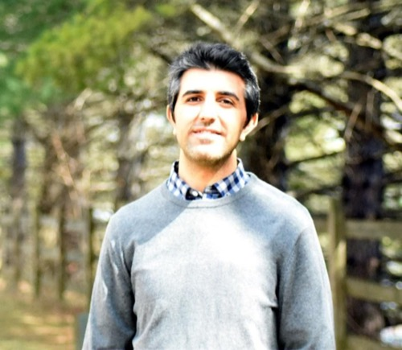
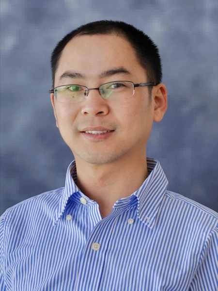
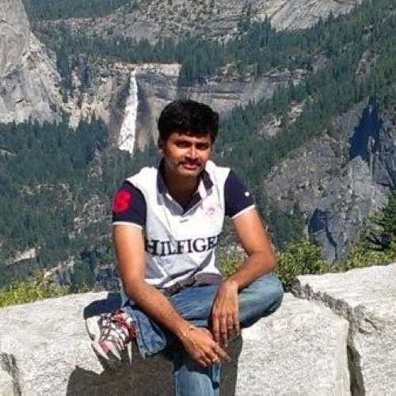
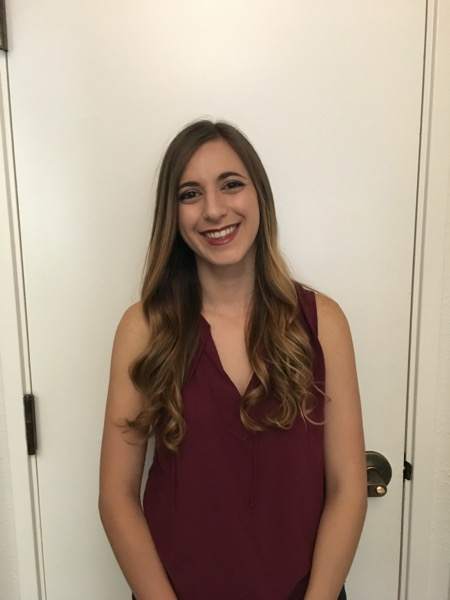
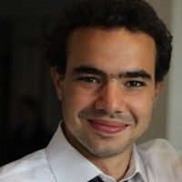
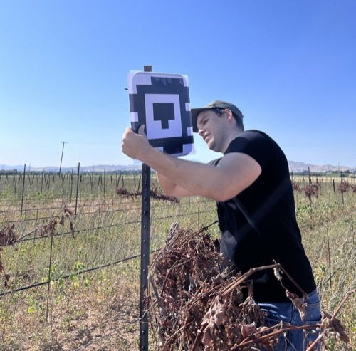
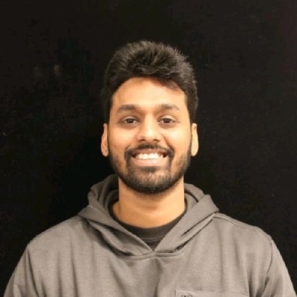
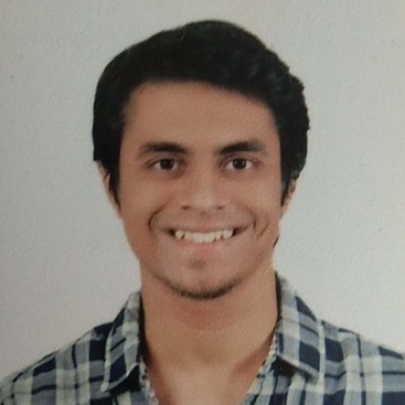
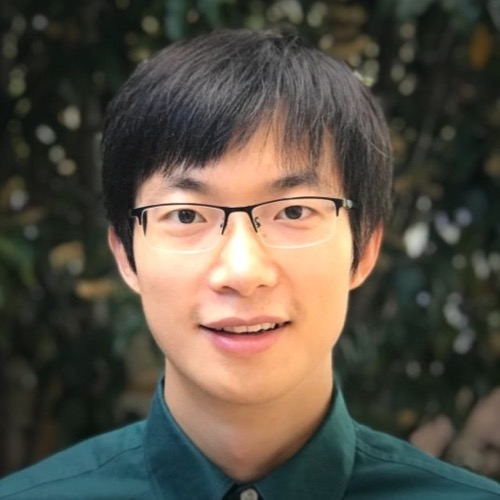
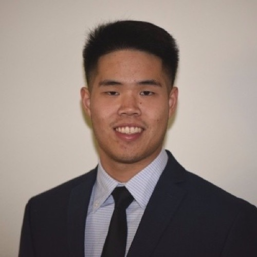
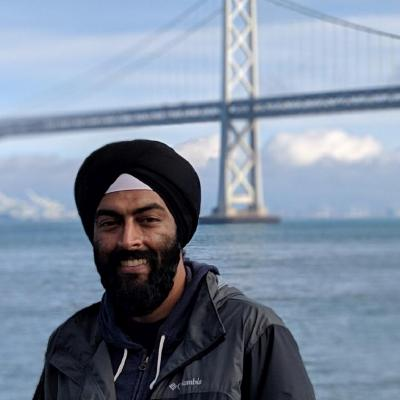
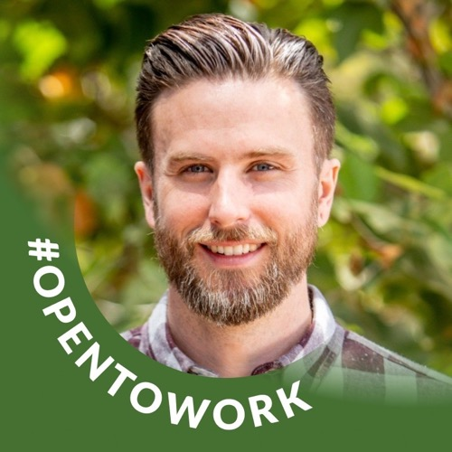
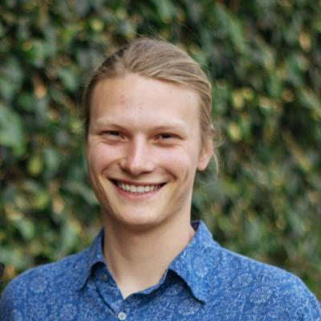